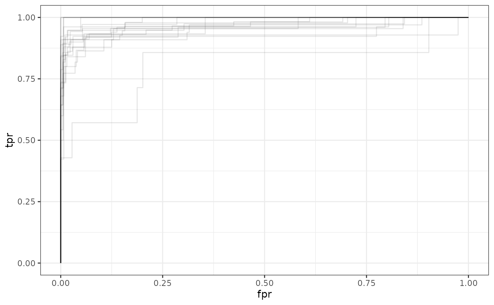

scoreLR
scoreLR.RmdIntroduction
Abstract
Score-based likelihood ratios (SLRs) are a statistical method used to quantify the weight of evidence and have been used in many forensic disciplines. Using the context of footwear evidence to make the problem more concrete, similarity/dissimilarity scores are computed from pairs of shoeprints. Note that there is a dependence between scores that share a shoeprint or shoe in common. Given up to 5 similarity/dissimilarity scores, we include four different methods of computing the SLR that address the dependence. We also provide a visualization of the resulting SLR using an ROC curve. More information can be found on the corresponding Github repository.
SLRs
Score-based likelihood ratios (SLRs) are used to determine the strength of evidence for a particular source proposition. Typically, they aim to quantify the similarity between an item found at a crime scene and a reference item with a known origin. The score measures the degree of similarity by analyzing one or more features of the items being compared. To assess the probative value of the evidence, examiners estimate the distributions of the score under two competing propositions using experimental pairs of items with a known origin. However, using items from the same source to build these distributions can result in score dependence. This dependence can affect the accuracy of the SLR as a classifier. To address this issue, Han (2022) explored methods to improve the performance of the SLR where kernel density estimation (KDE) was used to estimate the SLR. There, performance was measured based on accuracy, true positive rate, true negative rate, and the rate of weak or misleading evidence with the average features method showing significantly better performance in three out of four performance criteria compared to default methods.
Using SLR with Footwear Evidence
Take the following hypothetical scenario. Shoeprints are discovered and crime scene investigators obtain images of those prints. Additionally, high-quality impressions of a suspect’s shoe outsole are available to the forensic scientist. The question of interest is whether the suspect’s shoe could have produced the prints at the crime scene. To answer this question, we can rephrase the problem as a test of two propositions: \(H_p\): The shoeprints at the crime scene were made by the suspect’s shoe. \(H_d\): The shoeprints at the crime scene were made by someone else’s shoe.
Methods
Given scores \(s_1 .. s_k\) where each \(s_i\) is computed from a pair of shoeprints, the SLR is defined as
\[ SLR = \frac {f(s_1, . . . , s_k|H_p)}
{f(s_1, . . . , s_k|H_d)}\] where \(f(s_1, . . . , s_k|H_p)\) and \(f(s_1, . . . , s_k|H_d)\) are estimated
densities for the scores \(s_1 .. s_k\)
under the two different hypotheses. Since the scores do not obviously
follow any known distribution, kernel density estimation (KDE) is used
to estimate the KM and KNM distributions. However, KDE assumes that the
scores are independent. Scores computed from pairs of images are not
independent because images of the same shoe appear in multiple pairs.
For details about the data refer to the data section. There are four
proposed methods to deal with this dependence issue. The first method is
to ignore the fact that the observations cannot be assumed to be
independent and implement KDE using all available scores. This method is
labeled ignore_dep. Another is to remove the dependence in
the dataset that is used to estimate a KDE and to reduce the sample to
the largest independent subset of pairs. We call this the
strict_indep_set. In the third approach, we create multiple
random independent subsets of the training dataset and implement KDE in
each subset. This method is called multiple_kde. In the
last method, we average over the scans that correspond to the same pair
of shoes. Here the actual pairs of shoes included in the dataset are
independent. This is called average_features.
The Data
This package includes a dataset called shoedata. We use
a large set of footwear outsole images collected by the Center for
Statistics and Applications in Forensic Evidence (CSAFE). One hundred
and forty-seven pairs of worn shoes, each scanned four times, were
included in that dataset. A subset are included in the package. Note
each row corresponds to a pair of scans.
The data in this package is a data frame with 926 rows and 7 variables:
-
source1: shoe identifier for the first shoe, left (L) or right (R) -
dep1: pair identifier for the first shoe -
source2: shoe identifier for the second shoe, left (L) or right (R) -
dep2: pair identifier for the second shoe -
clique_size: score; size of the maximal clique -
med_dist_euc: score; median Euclidean distance between overlapping pixels -
input_overlap: score; proportion of overlapping pixels in the aligned images
For an example of what the original data looks like, refer to example section.
Inputting New Data:
You can choose to import your own dataset, but it must be of a specific format with specific names.
Your data should include:
-
source1: identifier for the first item -
dep1: pair identifier for the first item -
source2: identifier for the second item -
dep2: pair identifier for the second item - You can include up to five columns of scores where each column represents a different “function” (like euclidean, basic difference, deviation, etc). These do not have to be named something specific.
If sources match, then that row will be labeled as a known match and if sources do not match, it will be labeled as a known-non match.
Functions
This package has seven main functions and three helper functions.
dep_split
This function creates a train/test split for datasets with
dependencies. You can specify the train/test split proportion
p. Note p is between 0 and 1.
slr_results
This function is essentially a wrapper function that computes the results of various methods given a dataframe with the train/test split already done.
plot_slr_roc
This function plots the ROC curve for a given method. The ROC curve is created by plotting the true positive rate against the false positive rate at various threshold settings.
Methods Functions
1. ignore_dep
This function returns an SLR evaluation for the ignore dependence method. This method, like the name suggests, ignores that multivariate observations cannot be assumed to be independent, and performs kernel density estimation (KDE) using all available scores.
2. strict_indep_set
This function returns a SLR evaluation for the strict independence set. To use this method, we perform KDE on an independent subset of scores. (Note that independence here means that each source only appears in one pair.) The resulting dataset is much smaller than the original sample.
Using scoreLR
Installation
You can install the development version of scoreLR like so:
devtools::install_github("https://github.com/valeriehan6/scoreLR")Load Library
There are a couple of ways to use this package.
You can: * Use any of the methods to get SLR values * Plot the ROC curve of any of the methods * Compare methods
Example
First read in your data. Note your data must follow the specifications outlined in the data section.
The dataset included in the package shoedata is
displayed below.
head(shoedata)
#> source1 dep1 source2 dep2 clique_size med_dist_euc input_overlap
#> 1 1_L 1 1_L 1 6 1.81890 0.218
#> 2 1_L 1 1_L 1 6 1.41041 0.200
#> 3 1_L 1 1_L 1 6 1.80102 0.102
#> 4 1_L 1 1_L 1 8 1.08331 0.258
#> 5 1_L 1 1_L 1 5 1.93781 0.008
#> 6 1_L 1 1_L 1 12 0.91193 0.400Then, you can use the dep_split function to separate
your data into training and test data.
shoedata_split <- dep_split(shoedata, 0.75, seed = 20230506)
head(shoedata_split)
#> source1 dep1 source2 dep2 clique_size med_dist_euc input_overlap train
#> 1 103_L 103 103_L 103 9 1.11631 0.420 TRUE
#> 2 103_L 103 103_L 103 6 1.32526 0.372 TRUE
#> 3 103_L 103 103_L 103 5 1.55036 0.186 TRUE
#> 4 103_L 103 103_L 103 10 0.89472 0.472 TRUE
#> 5 103_L 103 103_L 103 5 1.29865 0.006 TRUE
#> 6 103_L 103 103_L 103 6 0.88348 0.160 TRUEThen you can calculate SLRs based on any of the four methods by specifying which of the four methods you’d like to run. The default is all four methods. We display this below.
results <- slr_results(shoedata_split,
method = c("IgnoreDependence", "StrictIndependentSet",
"AverageFeatures", "MultipleKDE"))
#> [1] "ROC_values not calculated8, 14"
str(results)
#> List of 4
#> $ IgnoreDependence :List of 5
#> ..$ KM_SLR :'data.frame': 48 obs. of 1 variable:
#> .. ..$ SLR: num [1:48] Inf Inf 8.43e+66 Inf 4.63e-03 ...
#> ..$ KNM_SLR :'data.frame': 146 obs. of 1 variable:
#> .. ..$ SLR: num [1:146] 0.003376 0.000408 0.001219 0.00171 0.012593 ...
#> ..$ threshold : num 0.0167
#> ..$ new_SLR : logi NA
#> ..$ ROC_values:'data.frame': 154 obs. of 2 variables:
#> .. ..$ tpr: num [1:154] 0 0.0625 0.125 0.1875 0.25 ...
#> .. ..$ fpr: num [1:154] 0 0 0 0 0 ...
#> $ StrictIndependentSet:List of 5
#> ..$ KM_SLR :'data.frame': 48 obs. of 1 variable:
#> .. ..$ SLR: num [1:48] Inf Inf Inf Inf 0.000527 ...
#> ..$ KNM_SLR :'data.frame': 146 obs. of 1 variable:
#> .. ..$ SLR: num [1:146] 0.015403 0.000293 0.006089 0.000237 0.037827 ...
#> ..$ threshold : num 0.0115
#> ..$ new_SLR : logi NA
#> ..$ ROC_values:'data.frame': 142 obs. of 2 variables:
#> .. ..$ tpr: num [1:142] 0 0.143 0.143 0.286 0.286 ...
#> .. ..$ fpr: num [1:142] 0 0 0.00709 0.00709 0.01418 ...
#> $ AverageFeatures :List of 5
#> ..$ KM_SLR :'data.frame': 8 obs. of 1 variable:
#> .. ..$ SLR: num [1:8] Inf Inf Inf Inf Inf ...
#> ..$ KNM_SLR :'data.frame': 14 obs. of 1 variable:
#> .. ..$ SLR: num [1:14] 6.21e-03 2.70e-03 9.51e-03 4.66e+08 2.43e-04 ...
#> ..$ threshold : num 0.553
#> ..$ new_SLR : logi NA
#> ..$ ROC_values: logi NA
#> $ MultipleKDE :List of 5
#> ..$ KM_SLR :'data.frame': 48 obs. of 1 variable:
#> .. ..$ SLR: num [1:48] Inf Inf 1.86e+86 Inf 8.48e-03 ...
#> ..$ KNM_SLR :'data.frame': 146 obs. of 1 variable:
#> .. ..$ SLR: num [1:146] 0.005451 0.000995 0.00399 0.002823 0.017074 ...
#> ..$ threshold : num 0.0217
#> ..$ new_SLR : logi NA
#> ..$ ROC_values:'data.frame': 150 obs. of 2 variables:
#> .. ..$ tpr: num [1:150] 0 0.0833 0.1667 0.25 0.3333 ...
#> .. ..$ fpr: num [1:150] 0 0 0 0 0 ...The output gives you a list. Each element corresponds to the output of the corresponding method function.
You can also choose to run the method itself after splitting the data by training/test sets and KM/KNM.
# Split data
KM_train <- dplyr::filter(shoedata_split, source1 == source2 & train == TRUE)
KM_test <- dplyr::filter(shoedata_split, source1 == source2 & train == FALSE)
KNM_train <- dplyr::filter(shoedata_split, source1 != source2 & train == TRUE)
KNM_test <- dplyr::filter(shoedata_split, source1 == source2 & train == FALSE)
# Ignoring dependence method
ignoredep <- ignore_dep(KM_train, KM_test, KNM_train, KNM_test)You can extract the SLR values for KM_test and
KNM_test from the output. Note that you can calculate the
accuracy and other performance metrics by specifying a threshold (e.g.,
1 or the optimal threshold calculated from the training data).
# KM and KNM SLR values for the test data
KM_SLR_test <- ignoredep$KM_SLR
KNM_SLR_test <- ignoredep$KNM_SLR
# optimal threshold
thresh <- ignoredep$threshold
# accuracy
tp <- (KM_SLR_test > thresh)
tn <- (KNM_SLR_test < thresh)
accuracy <- (sum(tp) + sum(tn))/(length(tp) + length(tn))
# true positive rate
tpr <- sum(tp)/length(tp)
# true negative rate
tnr <- sum(tn)/length(tn)
# rate of weak/misleading evidence
rwme <- (sum(KM_SLR_test < 100) + sum(KNM_SLR_test > 1/100))/
(nrow(KM_SLR_test) + nrow(KNM_SLR_test))
# you can choose to use a value other than 100You can also plot the ROC curves using plot_slr_roc. Due
to randomness in the train/test split and in choosing independent sets,
each run may produce a different ROC curve, so we allow the user to plot
multiple runs. alpha corresponds to the transparency
parameter in the ggplot2 package. Increase
alpha if the lines are too faint.
plot_slr_roc(shoedata, p = 0.75, method = "IgnoreDependence",
num_runs = 20, alpha = 0.1)
The method functions and slr_results can also estimate
the SLR for data where the ground truth is unknown as long as training
data is provided.
# example unknown data
unknown <- data.frame(clique_size = c(5, 8), med_dist_euc = c(1.9, 1.1),
input_overlap = c(.01, 0.26))
res <- strict_indep_set(KM_train, KM_test, KNM_train, KNM_test, unknown)
res$new_SLR
#> SLR
#> 1 0.001280425
#> 2 InfFuture Work
There are a couple things we would like to implement in the future.
- Include the final method in Classification performance of score-based likelihood ratios when data exhibit various degrees of dependence.
- Allow for different definitions of optimality.
- Add more helper functions since the method functions have a lot of code in common.
- Enable people to upload their own data to the Shiny App.
- Have a wrapper function that allows users to input data that doesn’t have the column names we specify here.